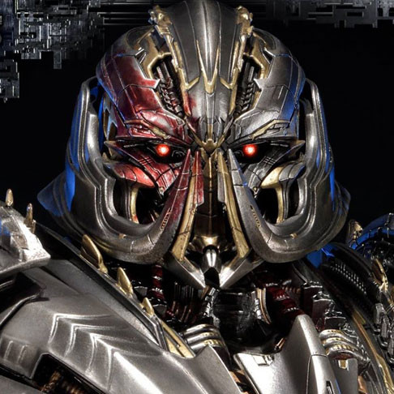

Cách đây rất lâu, Sentinel Prime là thủ lĩnh của Autobots trước Optimus Prime trong cuộc chiến trên Cybertron . Nhưng khi cuộc xung đột kéo dài, không có hồi kết, Sentinel thấy mình buộc phải đưa ra một lựa chọn quyết liệt: liên minh bí mật với Megatron . Tin rằng chỉ khi hy sinh một thế giới khác thì Cybertron mới có thể được khôi phục, Sentinel đã phát triển công nghệ cầu nối không gian dịch chuyển tức thời để vận chuyển tài nguyên qua khoảng cách giữa các vì sao—nhưng, biết rằng Optimus sẽ không bao giờ tha thứ cho hành động của mình, Sentinel đã giữ bí mật kế hoạch của mình, tuyên bố cây cầu là phương tiện vận chuyển quân đội vào trận chiến. Ý định của Sentinel là khởi hành đến hành tinh đã chọn— Trái đất—và gặp Megatron ở đó sau đó, nhưng trong trận chiến nổ ra khi con tàu Ark của Sentinel khởi hành , con tàu đã bị hư hại và bay theo hình xoắn ốc vào sâu trong không gian, được cho là đã mất tích vĩnh viễn. Cuộc chiến vẫn tiếp tục mà không ai cứu được Megatron nhận ra sự phản bội của Sentinel.
Năm 1961 , Ark đâm vào mặt trăng của Trái đất . Vụ va chạm đã được NASA phát hiện , châm ngòi cho cuộc chạy đua vào không gian của những năm 1960 và dẫn đến chuyến đi cuối cùng lên mặt trăng đầu tiên của Hợp chủng quốc Hoa Kỳ vào năm 1969 , đây là một nỗ lực bí mật để kiểm tra con tàu ngoài hành tinh bị rơi. Tuy nhiên, trước khi Apollo 11 đến đó, một nhóm Decepticon do Soundwave dẫn đầu, người đã theo dõi con tàu, đã dỡ bỏ phần lớn các trụ cầu không gian khỏi con tàu để tránh chúng khỏi bàn tay con người. Các phi hành gia của NASA không tìm thấy dấu vết nào của họ, cũng như của chính Sentinel, được niêm phong an toàn trong hầm va chạm của con tàu với năm cây cột còn lại.
Ở thời điểm hiện tại, một nhiệm vụ tới Chernobyl và cuộc chạm trán với Shockwave và Driller của anh ta đã dẫn đến việc Autobots của Optimus Prime phát hiện ra một mảnh của Ark , đã được phục hồi sau một sứ mệnh trên mặt trăng của Nga. Yêu cầu thông tin từ Giám đốc An ninh Quốc gia mới Charlotte Mearing , Optimus biết rằng con tàu đang ở trên mặt trăng, và sau đó đi đến đó cùng với Ratchet để tìm và lấy Sentinel Prime. Đưa cơ thể người cố vấn của mình trở lại Trái đất, Optimus đã hồi sinh anh ta bằng Ma trận Lãnh đạo, và Sentinel tỉnh dậy trong cơn thịnh nộ điên cuồng, tấn công Optimus trong một thời gian ngắn trước khi anh ta tỉnh lại. Sentinel giải thích cây cầu không gian cho Autobots và con người, than thở về việc dường như mất đi những cây cột mà Decepticons đã đánh cắp, và ngay lập tức tỏ ra không thích Mearing khi cô ấy ra lệnh giam giữ một số cây cột còn lại. Optimus tiến hành đưa Sentinel đi tham quan Trái đất, khiến Autobot cũ kinh ngạc trước vẻ đẹp và sự sống của hành tinh này, sau đó Optimus đã đề nghị trả lại Ma trận cho Sentinel. Sentinel từ chối nó, cảm thấy không thể lãnh đạo trên một hành tinh mà anh ta không biết, và nói với Optimus rằng anh ta giờ là giáo viên của anh ta, chứ không phải là người bảo trợ của anh ta.
Sau trận chiến, Prime bắt đầu trải qua sự thôi thúc trong tiềm thức, dẫn cả Autobots và Decepticons đến Vòng Bắc Cực. Khi họ đến, Shockwave đã ở đó để bắt họ như tội phạm chiến tranh. Shockwave đã thành công trong việc kết thúc cuộc chiến trên Cybertron, nhưng Prime sớm rơi vào tay một nhóm Autobot nổi loạn đã phát hiện ra Shockwave có chương trình lớn hơn. Tập hợp các Transformers trên khắp Cybertron để làm chính nghĩa, Prime đối mặt với Shockwave, nhưng đã bị đánh bại và Ma trận bị xé toạc khỏi anh ta và được sử dụng để kích hoạt Vector Sigma. Tuy nhiên, trước khi Shockwave có thể tận dụng hết dữ liệu của siêu máy tính, Ultra Magnus, anh trai của Prime, đã đến và đánh bại anh ta. Những vết thương mà Prime mắc phải trong cuộc xung đột này đòi hỏi một thời gian phục hồi kéo dài trong tình trạng đình trệ, nhưng việc Dreamwave đóng cửa có nghĩa là Prime không bao giờ xuất hiện trên các trang của họ nữa. Hình ảnh từ các vấn đề chưa được phát hành sau đó cho thấy Optimus Prime thức tỉnh từ buồng tái sinh lạnh và giải phóng Alpha Trion khỏi phòng thí nghiệm của Shockwave.